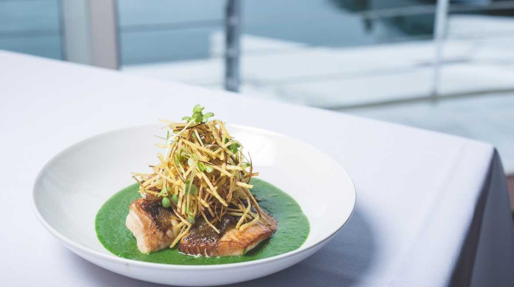

Dockside Restaurant & Bar is situated at the heart of Queens Wharf, and is one of Wellington’s most diverse venues with the ability to cater to every need. Housed in a historic waterfront shed, it enjoys stunning views from every aspect with a maritime theme throughout.
Dockside offers a largely seafood based menu focusing on the best of what New Zealand has to offer. The menu changes daily with emphasis on the best, freshest produce and providing even the most regular customers with new choices and the latest catch.
